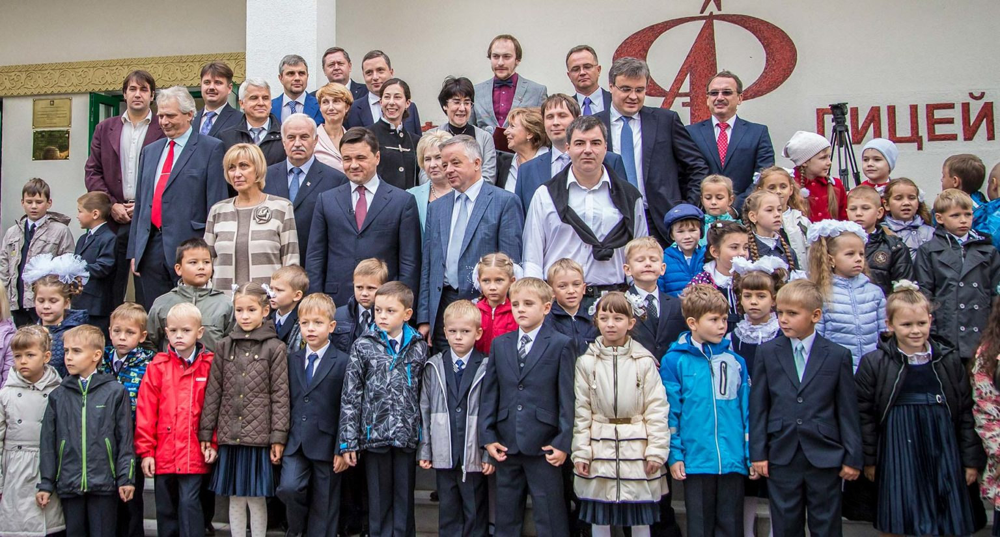

В основу воспитательно-образовательного процесса в Физтех-лицее положена стратегия ТТТ: традиции, таланты, технологии
Первое «Т» — Традиции задают направление развития, определяют ценностные ориентиры. Понимая, что основа воспитания для ребенка – это семья, мы также ставим себе цель построить в Лицее систему взаимосвязей семьи и школы, объединенную общими взглядами на цели и задачи воспитания.
Второе «Т» – Таланты, позволяет найти свой уникальный путь развития и свое призвание в направлении, определяемом на основе первого «Т», Традиций.
Третье «Т» — Технологии, позволяет двигаться по выбранному пути самосовершенствования с максимальной скоростью и на современном уровне.
